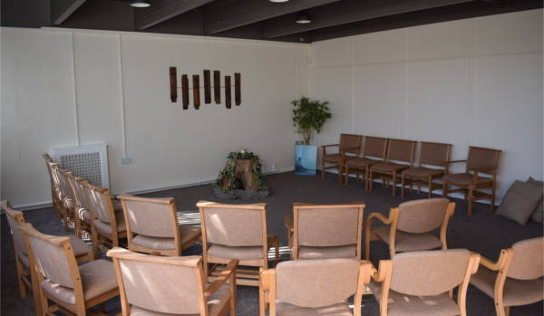
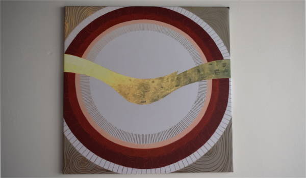
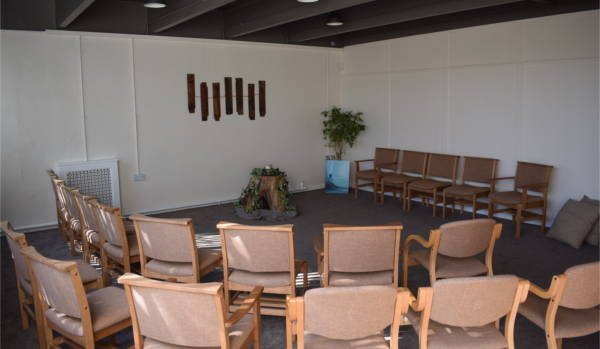
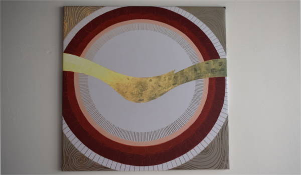

The Sheridan Quiet Room
People's lives are increasingly busy with little time to stop and be still. We live in an age where there have never been more time saving gadgets at our disposal and yet most of us find there are still not enough hours in the day.
With this in mind we offer the 'Quiet Room'. It has always been the aim of the Old Schoolhouse to be a form of sanctuary to the community in whatever guise that may be: finding help and comfort from the various organisations that make us their base, participating in the various activities provided for young and old and now, having the opportunity to find a space that is quiet and your own. A space that dictates nothing and hopefully offers you time for your own thoughts, ideas and relaxation.
Our Quiet Room is open all day for people to pop in and spend as long as they wish.
 


